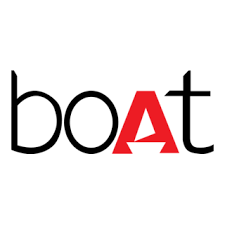
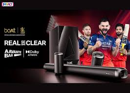
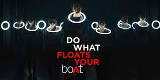

How India's youth audio brand combined sports culture, creator economy, and performance funnels to build a lifestyle category worth thousands of crores.

What started as an affordable audio accessories brand quickly transformed into a youth-first lifestyle label that speaks the language of millennials and Gen Z. More than just selling earphones, speakers, and wearables, boAt built a brand identity around aspiration, style, pop culture, and everyday self-expression.
The real strength of boAt's growth story lies in its marketing. Instead of relying on product features or price-led promotions, the brand consistently connects itself with moments that matter to its audience — sports, creators, entertainment, music, and digital culture.
This case study explores two of boAt's most successful campaigns: the IPL Cricket Campaign — a performance marketing masterclass — and the #FloatsYourboAt Creator Day Campaign — a brand storytelling and emotional positioning masterclass. Together they reveal boAt's complete strategic framework.
boAt recognized early that cricket in India is not simply a sport — it is one of the strongest emotional and cultural touchpoints for youth. By onboarding Hardik Pandya, Jasprit Bumrah, KL Rahul, and Rishabh Pant, the campaign built a complete conversion funnel, not just a celebrity endorsement.
Short, highly engaging video ads featuring cricketers in relatable, energetic situations were optimized for YouTube and display networks. Once audiences engaged, retargeting systems redirected them to product pages on Amazon — directly reducing purchase drop-off.
"boAt did not stop at celebrity awareness. It built a complete funnel: video engagement → retargeting → e-commerce conversion. That is what separates brand spend from brand investment."
The messaging sold identity — not specifications. Owning the product meant being part of a modern, energetic, stylish youth culture. The campaign delivered massive reach, strong click-through rates, reduced cost per click, and increased product interest — proving it was both a brand awareness initiative and a performance marketing system.

Unlike the IPL campaign, this one focused on emotional connection and brand identity. boAt recognized that creators, influencers, and digital storytellers represent the modern generation's ambition. The campaign was built around a powerful cultural insight: creators are not just content makers — they are trendsetters and aspiration symbols.
The campaign messaging centered around acknowledging the hard work behind content creation. Using ring lights, creator setups, and storytelling around hustle culture, boAt entered the creator economy conversation authentically.
"Instead of saying 'buy our headphones,' the campaign said 'we understand your journey.' This subtle shift deepened emotional trust — the difference between a transaction and a relationship."
Kartik Aaryan's presence added mass appeal. The content formats were digital-native: short-form videos, creator collaborations, influencer amplification. The campaign's biggest success factor was community building — making creators feel seen, celebrated, and respected by the brand.

boAt never leads with technical specifications. The brand sells what ownership means — being part of a modern, energetic, style-forward culture.
The IPL campaign proved that celebrity awareness without retargeting is wasted spend. boAt built a full funnel: awareness → engagement → retargeting → e-commerce conversion.
Cricket and creator culture are not just trends — they are the emotional fabric of boAt's target demographic. Aligning with them creates authentic resonance, not borrowed interest.
By entering the creator economy as a brand that celebrates creators — not just sponsors them — boAt built genuine community loyalty that influencer fees alone cannot buy.
The Creator Day campaign was insight-led, not product-led. Understanding your audience's ambitions and reflecting them back is the most powerful form of brand communication.
IPL drives immediate sales; Creator Day builds long-term loyalty. Both are necessary. Brands that only optimize for one will eventually lose both — boAt mastered the balance.
boAt's success comes from combining culture, community, and commerce. The IPL campaign shows how brands can use major events and celebrities to create direct sales funnels. The Creator Day campaign shows how emotional storytelling builds loyalty and deeper brand recall.
The larger strategic lesson is simple: successful marketing is not only about visibility. It is about connecting the right message with the right moment and the right audience. boAt consistently wins because it understands youth psychology.
Today's consumers do not simply buy products — they buy identity, belonging, and cultural relevance. Any brand that understands this and executes consistently will build a category-defining position.
At Brand Business Talk, we help brands with research, strategy, market insights, and growth recommendations. Let's build your brand growth strategy together.